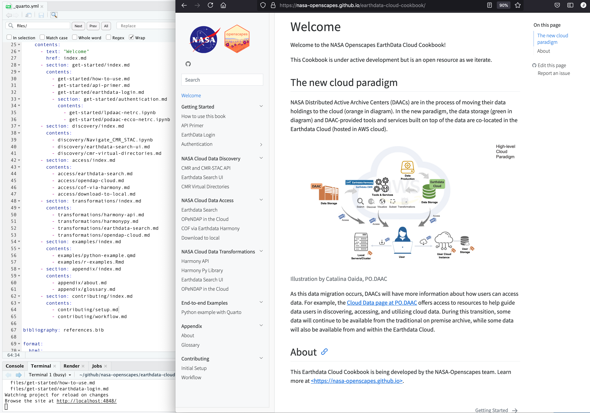

Workflow
Workflow for contributing to our Cookbook
Your workflow can be from whatever software you are most comfortable with: you can develop chapters working in an integrated development environment (IDE) like RStudio or VS Code, notebook interface like JupyterLab, or a text editor. You’ll develop content like you normally would, executing all code like you normally would as you develop your .ipynb , .md , .Rmd, and .qmd files. By default, when we build the Cookbook it will not execute code in Jupyter notebooks.
Then, when you’re ready to update your contribution in the Cookbook, Quarto will combine all the files to make the Cookbook (or other books like it!). Below is a full workflow but depending on how you’re contributing, you may have more focus on different parts of it.
Quickstart reference
Daily setup: get the latest!
Make sure you have a recent version of Quarto.
## check which branches exist, where you are, and pull recent from main branch
git branch
git checkout main
git pull
## create and switch to new branch
git checkout -b branch-name
## develop content: write prose in markdown, code in R and Python
## remember to render any .ipynb, .rmd, or .qmd files before pushing
quarto serve
quarto render # can also render single file
## commit changes
git add --all
git status
git commit -m "my commit message here"
## push changes
git push -u origin branch-name # connect your branch to github.com and push
## create a pull request
## from GitHub.com, create a pull request and once it is merged, delete your branch
## delete branch
git checkout main # switch to the main branch
git pull # pull merged updates from github.com
git branch -d branch-name # delete old local branchGitHub Workflow
First let’s talk about the GitHub part of the workflow.
We will work in branches so as to not overwrite each other’s work, and let GitHub do what it does best.
The main branch will be the current approved version of the book. The main branch is what displays at https://nasa-openscapes.github.io/earthdata-cloud-cookbook.
A nice clean workflow with branches is to consider them temporary. You pull the most recent from main, you create a branch locally, you make your edits, you commit regularly, you push regularly to github.com, and then you create a pull request for it to be merged into main, and when it’s approved the branch is deleted on github.com and you also delete it locally. That’s the workflow we’ll walk through here. A great resource on GitHub setup and collaboration is Happy Git with R, which includes fantastic background philosophy as well as bash commands for setup, workflows, and collaboration.
The following assumes you’ve completed the initial setup from the previous chapter.
Branch setup
First off, check what branch you’re on and pull the most recent edits from the main branch. If you need to switch branches, use git checkout. *Note: a new alternative to git checkout is git switch (see this blog); when you updated git consider using it here instead too.
git branch # returns all local branches
git checkout main # switch branch to main
git pull # pull most recent from the main branchIf you are already on the main branch, git will tell you, and that’s fine.
(If you have any residual branches from before, you’ll likely want to start off by deleting them — assuming they were temporary and have been merged into github.com. You can delete a branch with git branch -d branch-name).
Next, create a new branch, then switch to that branch to work in. Below is a one-step approach for the two-step process of git branch branch-name then git checkout branch-name (read more).
git checkout -b branch-name # create and switch to new branchDevelop content
Time to edit and develop content, and run your Quarto Workflow – see specific instructions below. While you’re developing, you’ll want to frequently commit and push your changes.
Commit changes
You’ll commit your work regularly as you go, likely using the following, which commits all files you’ve affected within the Cookbook project:
git add --all
git commit -m "my commit message here"From R Packages by Hadley Wickham:
A commit takes a snapshot of your code at a specified point in time. Using a Git commit is like using anchors and other protection when climbing. If you’re crossing a dangerous rock face you want to make sure you’ve used protection to catch you if you fall. Commits play a similar role: if you make a mistake, you can’t fall past the previous commit.
Here are more of Hadley’s suggested best practices.
Push changes
When you’re ready to push changes you’ve made in your branch, you’ll first need to connect it to github.com by pushing it “upstream” to the “origin repository” (-u below is short for --set-upstream):
git push -u origin branch-name # connect your branch to github.com and pushThe above is a one-time command to connect your local branch back to github.com. After you’ve pushed successfully the first time, then as you continue to commit, you’ll be able to push as normal:
git pushDelete your local changes
There are several ways to delete your local changes if you were playing around and want to reset. Here are a few:
Burn it all down - delete the whole repo that you have locally, and then reclone.
cd 2021-Cloud-Hackathon
rm -rf 2021-Cloud-Hackathon Undo changes you’ve maybe saved or committed, but not pushed. This is less time and internet intensive (no new clone/download).
If you’ve got changes saved, but not yet staged, committed, or pushed, you’ll delete unstaged changes in the working directory with clean:
cd 2021-Cloud-Hackathon
git clean -df
git checkout -- .Here is a whole blog on how to do this, with conceptual diagrams, command line code, and screenshots from RStudio. https://ohi-science.org/news/github-going-back-in-time
Update local branch with remote main branch
If while you’re working you would like to update your local your-branch with the most recent updates on the main branch on GitHub.com, there are several ways to do this.
checkouts and merge main
Git Update Local Branch with remote Master
git checkout main
git pull
git checkout your-branch
git merge mainfetch and merge origin/main
git checkout your-branch
git fetch
git merge origin/mainPull Request
Now you’ve synced your work to github.com. It is currently online, in a separate branch from the main branch. Go to https://github.com/nasa-openscapes/earthdata-cloud-cookbook, find your branch, and do a pull request.
TODO: Let’s discuss our review process:
- Tag someone to review, (including you if it’s a quick fix?)
- Timeline
- Merging
When the pull request is merged, delete the branch on github.com. GitHub will prompt you with a button at the end of the merge.
Delete Branch
Once your pull request is merged and you’ve deleted the branch from github.com, then come back to your local setup and delete the branch locally:
git checkout main # switch to the main branch
git pull # pull merged updates from github.com
git branch -d branch-name # delete old local branchQuarto Workflow
Now the fun part! Our overall workflow will be to serve the book at the beginning, develop/edit chapters as simple text files (.md/.qmd/.Rmd) or executable notebooks (.ipynb) that will all render into the book.
Quarto lets us easily convert between file types, so depending on how you prefer to work and how you’d like to interact with different audiences, we can go between formats as we wish. For example, we can converting an existing .ipynb to .qmd to collaborate during development, and then convert back to .ipynb files for our workshops. See quarto convert help for details.
As you work, you’ll follow our GitHub workflow above, committing regularly. Remember to execute code in your Jupyter notebook ( .ipynb file)as you’re working so that your changes will be be included in the Cookbook before pushing to github.com.
The following is to run Quarto from the command line in our JupyterHub; see quarto.org to see equivalents in RStudio. See also this video (TODO link) demonstrating this workflow.
Quarto preview
The thing to do first is to “preview” the Cookbook so that we can see what it looks like as we develop the chapters.
Run the following from your branch in your earthdata-cloud-cookbook directory from the command line:
quarto previewAnd after it is served, paste the url into your browser to see the development version of the Cookbook.
You can open another instance to continue working from the command line, including running other shell commands and rendering (see next). Launching your command line shell of choice will open a new instance.
Develop Cookbook Content
You can develop Cookbook chapters in the text editor, IDE, or notebook editor of your choice (i.e. see JupyterLab with Quarto).
RStudio IDE & Visual Editor
You can also use the RStudio IDE. It can be used as a simple text editor, but it can also interactively execute code in .qmd and .Rmd files too.
The RStudio IDE Visual Editor makes this experience feel like a cross between an interactive notebook and a Google Doc:

Above shows the Visual Editor in the top left pane with an interactive .qmd file. Learn more about the RStudio Visual Editor.
Another benefit of the RStudio IDE is that it has a docked command line (Terminal, bottom left pane), file navigation (bottom right pane) and GitHub interface (top right pane). The IDE helps keep things organized as you work, and provides a visual way to review your git commits and do common commands (see this RStudio-GitHub walk through from R for Excel Users). Note too that the image shows the second instance of the Terminal command line; the first is being used to serve Quarto.
Quarto render
As you develop book chapters and edit files, any .md files will automatically refresh in the browser (so long as quarto serve is running)!
To refresh files with executable code, you’ll need to render them individually. You can do the following to render .ipynb/.qmd/.Rmd files so that they show up refreshed in the served Cookbook.
quarto render my-document.ipynb ## render a notebook
quarto render my-work.qmd ## render a Quarto file
quarto render my-contribution.Rmd ## render a RMarkdown fileFrom the RStudio IDE, you can also press the Render button to render .qmd and .Rmd files.
And you can also render the whole book:
quarto renderLearn more about rendering with Quarto. From J.J. Allaire:
The reason Quarto doesn’t render
.Rmdand.qmdon save is that render could (potentially) be very long running and that cost shouldn’t be imposed on you whenever you save. Here we are talking about the age old debate of whether computational markdown should be rendered on save when running a development server. Quarto currently doesn’t do this to give the user a choice between an expensive render and a cheap save.
Includes (re-use markdown)
We are setup with an includes filter (details at Quarto.org) that lets us re-use markdown content within a project! (You can think of this like “knit child” in R Markdown and lets you source text like you source scripts from each other). This means that we can write text more modularly and re-use it in multiple places so that it’s always up to date.
An example of this in action is in our 2021-Cloud-Hackathon Quarto book, where each day of the schedule is saved in a separate file:

This is then called within a book chapter, with a relative filepath:
The Clinic will occur in 2 halves, with a 5 minute break in-between:
{.include}
../logistics/_schedule-clinic.md…to finally look like so:

Includes - things to note
- prefix files to include with an underscore.
- From quarto.org: You should always use an underscore prefix with included files so that they are automatically ignored (i.e. not treated as standalone files) by a
quarto renderof your project.
- From quarto.org: You should always use an underscore prefix with included files so that they are automatically ignored (i.e. not treated as standalone files) by a
2i2c Workflow
We use 2i2c to run notebooks.
Log into 2i2c
- Go to the openscapes 2i2c. You should see the openscapes 2i2c instance.
- Click on the orange “Log in to continue” button. You should see the Openscapes-Prod page.
- Click the “Sign in with Github” button and log in. If you aren’t already logged into Github, you should see the login prompt. Otherwise, you will be logged in automatically.
Start a 2i2c session
At this point, what you see depends on whether or not you have an active session. If your session is active, JupyterLab will load and you can start your work. If not, you’ll need to start a new session:
- Select a server based on the size of your job. You should see a progress window showing you what 2i2c is doing to get your session started. It may take several minutes, but you’ll eventually see a JupyterLab instance.
Create a Jupyter kernel to run notebooks
The default jupyter kernel may not have all the libraries you need to run a notebook. Fortunately, you can make a new kernel on the fly to use with the notebook.
Open a terminal in JupyterLab.
- Click on the large blue “+” button on the upper left. You should get a new Laucher tab.
- In the Launcher tab, click on “Terminal” under “Other.” You should get a tab with a command line prompt.
Create a conda environment using your favorite method.
Activate the new environment with
conda activate YOUR_ENVIRONMENT_HERE. You should see the name of the new environment in your command line prompt.Create a new kernel by calling
ipython kernel install --name YOUR_ENVIRONMENT_HERE --user. You should get a response saying saying the kernel has been installed.
To use this new kernel,
- Open the notebook you want to run. You should see the notebook in a tab.
- Click on the current kernel on the upper right. The default kernel is called
Python 3. You should see a kernel selection widget. - Select the new kernel you created and click the “Select” button. The kernel on the upper right should now give the name of your custom kernel.
Dockerfile
To update the Dockerfile, see corn’s README.
Virtual Environments
If you are working on a chapter that loads any Python or R packages, to make your work reproducible you’ll need to create and then update the environments.txt file. Do this use the pip freeze command:
pip freeze > requirements.txtThis will overwrite/update the requirements.txt file. Depending on where you are working, you might also want to create a new subfolder to store the requirements.txt. See the next section on Cookbook Structure.
You you will then commit and push along with your other edits back to github.com.
TODO: info about conda…
Cookbook Structure
Each chapter in our Cookbook is a separate file (.md/ .ipynb/.qmd/.Rmd). These are stored in our files directory, organized by sub-directory.
The Cookbook structure (i.e. the order of sections and chapters) is determined in the _quarto.yml file in the root directory. We can shuffle chapter order by editing the _quarto.yml file, and and add new chapters by adding to the _quarto.yml and creating a new file in the appropriate sub-directory that is indicated in _quarto.yml.

Please experiment, add new chapters and sections; we can shuffle chapter order and subsections as we continue to develop the Cookbook, nothing is set in stone.
Cookbook Practices
These are shared practices that we have for co-developing the Cookbook. This will be developed further as we go!
Markdown formatting with Quarto
Quarto expects a certain “flavor of Markdown”, which means there are a few things we should be aware of with any Markdown in notebooks:
Avoid --- as Markdown breaks because it is confused with yaml headers and will stop displaying your notebook. Instead, use *** to make any line breaks.
Put a carriage return before lists
This will avoid the following, when ipynb can display the list correctly with no carriage return but quarto does not.
Executing notebooks
As you develop files with executable code ( .qmd, .Rmd, and .ipynb), you can decide if you don’t want the notebook to execute. By adding YAML as a raw text cell at the top of an .ipynb file, you can control whether it is executed or not. Adding execute: false to the YAML at the top of the file basically means that Quarto never runs the code, but the user of course still can interactively in Jupyter.
Using .qmd there are also ways to control execution cell-by-cell via # | syntax within a code chunk; see https://quarto.org/docs/computations/execution-options.html
Importing remote notebooks
We can include remote notebooks in the Cookbook by explicitly importing them with the following steps. This will create a local copy of them that have additional preamble inserted that includes the original urls and attribution for the notebook.
Navigate to the
_importdirectory.Open
assets.jsonin a text editor. Copy an existing example and use the same structure to indicate the remote notebook you’d like to include. You can write Markdown in the preamble.title: this will be the new title of the notebook
preamble: this text will be inserted into the notebook below the new title. It should include any description and attribution of the notebook. The preamble is followed by two URL fields (next):
source: the url landing page. This should be more general than the specific notebook (i.e. this could be the root GitHub repository).
url: the url of the notebook. (i.e. a url that ends with .
ipynb)target: the local filename to give the notebook. The notebook will be saved in the
externalfolder in the root directory.process: true or false: whether or not to include the entire entry when running the
quarto_import.pyscript
After these updates to _import/assets.json, to the following in the terminal:
cd _import
conda env update -f environment.yml
conda activate quarto-import
python quarto_import.py -f assets.jsonThis will return a confirmation of the file that has been processed.
Then update _quarto.yml by adding your file (external/<target) to the appropriate location in the Cookbook.
Create a .qmd from external .ipynb
This is a bit of a hacky way that we can formalize further if it’s useful:
- Go to an existing notebook, e.g. https://github.com/podaac/AGU-2020/blob/main/Part-II/01_sst_shpfile/AGU_tutorial1_shp_search.ipynb
- Click on Raw, e.g. https://raw.githubusercontent.com/podaac/AGU-2020/main/Part-II/01_sst_shpfile/AGU_tutorial1_shp_search.ipynb
- Copy text
- In your local setup (e.g. RStudio IDE): New File > Text File > Paste > Save (with the same name if appropriate) and
.ipynbextension, e.g.:discovery/search-by-shapefile.ipynb - In the command line:
#| eval: false
quarto convert help # reminder of commands!
quarto convert discovery/search-by-shapefile.ipynb # convert to .qmd
rm discovery/search-by-shapefile.ipynb # delete .ipynbNotebook Review
Preamble
GitHub displays differences in code, so a nice way to review other people’s work (or your own) is to edit files directly and view the commit differences at GitHub. We’ll do this by first creating a branch and pull request so that that there is a chance for the original author to be notified of the suggestions and review them before merging back to the main branch (at which point the quarto book/site will be rebuilt since we have a GitHub action setup to do so).
GitHub can have trouble with .ipynb notebooks; their differences include file-formatting changes and are often too big to display. See examples: CMR notebook with file-formatting diffs and the CMR-STAC API notebook review with diffs too big to display. This means that while you can still edit it directly, it’s hard to alert the author to what changes you made. Some emerging conventions to help with this:
- write
TODOfor “to do’s”, but this as one word all-caps makes it easier to search
Review with .qmds
Since quarto notebook files (.qmds) are text files, GitHub can display their differences nicely, for example: CMR-STAC API qmd.
Here is a workflow to leverage .qmds in our review process:
- Clone/pull the repo, create a branch following our GitHub Workflow above
## git clone and branch
git clone https://github.com/NASA-Openscapes/2021-Cloud-Hackathon/
git checkout -b my-new-branch- In the terminal, use
quarto convertto convert a notebook from.ipynbto.qmd. You’ll have to eithercdinto the folder or you can convert by specifying the filepath. Typingquarto convert helpwill describe more options. The following will createtutorials/Data_Discovery__CMR-STAC_API.qmd.
## quarto convert
quarto convert tutorials/Data_Discovery__CMR-STAC_API.ipynbCommit this file now so that the whole file is tracked and any changes you make will be viewed as diffs.
Now, make edits/review the
.qmdin your editor of choice, which will likely also have spell-check and markdown support. At the moment, this is best with making edits to the.qmdlocally while ALSO running the.ipynbnotebook in 2i2c. This will iterate as we get quarto set up in 2i2c (and as we work more with.qmds).When you’re done with your review, you’ll want to copy all your edits from the
.qmdback to the.ipynb. This way, the notebook author can both easily see the diffs made to the.qmd, and run the.ipynbas they normally would in 2i2c. The following code createstutorials/Data_Discovery__CMR-STAC_API.ipynb, and over-write the original.ipynbwith your changes.
quarto convert tutorials/Data_Discovery__CMR-STAC_API.qmd Quarto will consider the
.qmdbook chapter and try to render it. To avoid this, by hand you can prefix the filename with an underscore: before you push:_Data_Discovery__CMR-STAC_API.qmd(do this by hand for now, we’ll iterate further)Finally, commit and push your review!
Code Review
Upcoming.
Troubleshooting
Error: AddrInUse
ERROR: AddrInUse: Address already in use (os error 48)
This error is because you had more than one instance of quarto serve going in your session. So close other command line instances that are running and try again. (If you use the R package and do quarto_serve() it will automatically make sure you only ever have 1 instance.)
Leave/exit a virtual environment
In your Command Line Shell, if you want to leave your virtual environment, the command is:
deactivateThe way you tell that you are in a virtual environment: it’s named in parentheses at the beginning of your prompt:
(.venv) (base) JLos-Macbook-Pro:earthdata-cloud-cookbook lowndes$ deactivate
(base) JLos-Macbook-Pro:earthdata-cloud-cookbook lowndes$